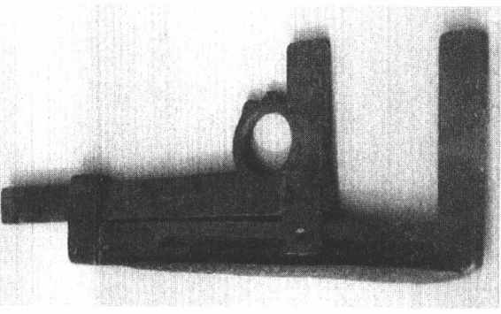

第五节
汉代是中国度量衡制度的完备时期
汉代度量衡是秦制的延续和发展。从汉高祖命张苍定度量衡程式，到《汉书·律历志》的成篇，在中国度量衡发展史中起到了一个承前启后的作用。而汉代度量衡又以新莽时期最具有代表性。西汉末年，王莽把持朝政，建立了一个历时仅十几年的“新朝”。为实现其政治图谋，他以复古改制为名，进行了一系列改革，但多遭惨重的失败，唯有度量衡的“改制”取得了显著的成效。（图16—15）度量衡的改制，是在天文、乐律、数学家刘歆的主持下进行的。刘歆等系统考证了前代制度，提出了建立度量衡体系，包括各级单位名称；进位关系；单位量值的确定；标准器的设计、制造以及行政管理等。特别是在前人基础上明确地提出以“黄钟”为度量衡标准，假以累黍为介质，直接定出长度标准从而推导出容量和重量标准。经过归纳、整理，分成审度、嘉量、权衡三篇专论。后被班固收入《汉书》，列为《律历志》首篇。此后《汉书·律历志》便成为中国古代度量衡最完备、最重要的文献。继汉以后历代，皆以它为圭臬而遵循。
图16-15 新莽统一度量衡铜诏拓本
一、《汉书·律历志》中“审度”、“嘉量”、“权衡”篇
近年来，新莽时期度量衡器多有发现，与《汉书·律历志》相互印证，可对这一时期度量衡有一个更全面的了解。
1．审度篇［52］：首次明确规定了长度的五个单位是分、寸、尺、丈、引，皆十进制。标准器是一铜丈：厚一寸、宽二寸、长一丈。由内官“廷尉”掌管。1927年在甘肃出土了一支铜丈，上面刻有新莽统一度量衡诏书共81字。器已损坏、折断，据记述，铜丈之长、宽、高与《审度篇》所规定基本相符。此外，近年出土的汉尺较多，实测各种尺长均在23厘米左右，即与秦尺同长。
除一般直尺外，新莽时还制造了便于测量圆球体直径的专用测长工具——卡尺。卡尺上有铭文“始建国元年（9年），癸酉朔日制”。固定尺中间有导槽，滑动尺正面有刻度。卡尺的发现，说明最晚在西汉末年，我国测长技术已从一支直尺发展到可作多种用途的专用测长工具，是古代测长技术史上的一次突破。［53］（图16—16）

图16-16 新莽铜卡尺
2．嘉量篇［54］：容量单位是龠、合、升、斗、斛。二龠为合；十合为升；十升为斗；十斗为斛。由管理国家仓库的官吏“大司农”掌管。容量的标准器是一件五量合一的“嘉量”，器形仿《考工记》中的“栗氏量”。［55］今台北故宫博物院藏有一件。（图16—17）嘉量为铜质，主体是一个大圆柱体，近下端有隔断，上方是斛量，下方是斗量；左侧是一个小圆柱体为升量；右侧也是一个小圆柱体，上为合量，下为龠量。故斛、升、合口朝上，斗、龠口朝下。器壁正面刻81字总铭外，背面刻五量分铭，详尽地记述了各量的数度和经过验算所得之容积，即每器之积均为16.2立方寸的分数或倍数，与商鞅方升量值相同。说明刘歆定度量衡，严格遵循“古”制。然而嘉量各器皆为圆柱体，在数学运算尚处在“圆周率三，圆径率一”的汉代，要把圆形器的体积精确地计算出来是难以做到的。刘歆为了要使容量合乎古制，就必须遵循秦汉一尺之长，一升之容的标准。于是他经过精心设计和运算，把圆周率从“径一周三”提高到3.1547。至南朝北宋时，祖冲之偶然见到了此量，对器的计算容积产生了疑点，认为根据刘歆给出的数据，计算所得的容积应该是161.23有余，达不到162。最后祖冲之经反复运算，终于得到了圆周率为3.1415926—3.1415927之间，以此圆周率再去计算各器的容积为161.999……。［56］这样，与162就十分接近了。嘉量一方面从形式上遵从战国时栗氏量——器圆并数量合一；容积又完全遵从秦之遗制——各器皆为16.2的倍数。能做到这一点实属不易。设计者不仅在一件器物之上集中了容量制度中的五个单位量，还用刻铭记每一器的度数，从而长度标准也明。此外还规定了全器总重“二钧”（60斤）。故后代只要得到一件“嘉量”，则度量衡三者量值犹存。故历代均把嘉量视为传世之瑰宝，两千年来，研究者甚众，赞美声不绝。
图16-17 新莽铜嘉量
除嘉量外，今藏国家博物馆的新莽铜方斗也是一件珍品。（图16—18）斗口沿处刻铭文“律量斗，方六寸，深四寸五分，积百六十二寸，容十升。”方斗正面浮雕凤纹，其他三面浅刻黍、麦、豆、禾、麻五种主要农作物。此外还见有铜升、铜龠、铜撮等。皆制作精美，量值准确。

图16-18 新莽铜方斗及纹饰
3．权衡篇：［57］重量单位制是：铢、两、斤、钧、石。24铢为1两；16两为1斤；30斤为1钧；120斤为1石。器形仿楚国环权。故曰“圆而环之”。由“鸿胪”掌管。1927年在甘肃出土了新莽时期铸造的铜衡杆和多件铜环权；衡杆中间有提纽，两端各有扁平长方体的悬纽。衡杆中部刻统一度量衡81字诏书。环权有石权、2钧权、6斤权和3斤权各一枚。石权外壁一侧亦刻有81字诏文，另一侧刻“律石权，重四钧”。实测29950克，折合每斤约250克，与秦权同。二钧权刻铭文：“律二钧，始建国元年正月癸酉朔日制。”其余各权也皆有铭文。（图16—19）
图16-19 新莽铜衡杆、铜钩、铜环权
二、黄钟、累黍与度量衡标准的确立
如果说以人体、谷物为度量衡标准，是人类共同的设想和做法，那么以黄钟、累黍定度量衡，则是中国特有的一种创造发明。
远古时期，人们在生产、生活实践中用自身的器官判别事物的数和量，故有了布指知寸、布手知尺；舒肘知寻；举足为跬、倍跬为步；一手之盛谓之溢，两手谓之掬之说。随着时代的进步，至汉代，人们已认识并利用物理性能比较恒定的自然物或自然现象作为度量衡标准了。如“黄金方寸，而重一斤”［58］；“水一升，冬重十三两”［59］等。而《汉书·律历志》则明确规定：“度者……本起（于）黄钟之长，以子谷租黍中者，一黍之广度之，九十分黄钟之长。”“量者……本起（于）黄钟之容，以子谷秬黍中者，千有二百实其龠。”“权者……本起（于）黄钟之重，一龠容千二百黍，重十二铢。”
“黄钟”是中国古代乐律学中十二律名之一。［60］明朝朱载堉云：“乐也者，声之学也；律也者，数度之学也。”［61］东汉蔡邕云：“律，率也，声之管也。”又云：“古以钟律齐其声，后人不能，则数以正其度，度正则音亦正。”［62］乐声是按照声音高低排列，由低到高，宫、商、角、徵、羽就是五声音阶，而乐律是指音阶中每个音的高低规律。我国早在战国时期已形成了三分损益法，以确定管或弦的长度和发音高低之间的关系。如何正确理解《汉书·律历志》中关于黄钟、累黍与度量衡之间的关系，是我们研究的关键所在。《易·系辞》曰：“形而上者谓之道，形而下者谓之器。”［63］乐要发声必制器，律管，形而下之器。它必有长短、容积之量。从物理学的角度来看，一支律管在管径不变的情况下，其频率与管长的四倍成反比。由于能发出黄钟乐律之管，其长度、口径是固定的，制器时用度量衡把律管的数据确定下来。反之，利用律管佐以累黍之法，又可以制约度量衡，成为度量衡理论上的标准。蔡邕《月令章句》云：“律，率也，声之管也……律亦以寸分大小长短为法故也。黄钟之管长九寸，孔径三分，围九分，其余皆稍短。唯大小围数无增减。以度量者，可以文载口传，与众共知，然不如耳决之明。”［64］这段文字说明了声与度之间相互制约的关系。然而度量器一旦不存，或制度发生变化，也会失去文存口传的特点。为此古人又去寻找某种相对恒定的自然物体，把度量衡三者用数规定下来。累黍就是其中行之有效的方法之一。
以累粟黍与尺度相佐证，可追溯至西汉。《说苑》中即有“度量权衡以粟生为一分”。而古人通过各种试验证明，唯黍粒的大小长短，基本上能与当时长度单位“一分”相合。横排90粒中等大小的黍，即合黄钟之长，100粒约略相当1尺。《汉书·律历志》加以发展、完备。首先以90黍合黄钟律管之长为基数，100粒黍则合1尺。又说，黄钟律管可容黍1200粒，1200粒黍之重则合12铢。这样，只要有了一支黄钟律管，并假以累黍便可以得到度量衡三个基本单位量了。
古人多尊儒训经籍，对周汉制度尤为推崇。自《汉书·律历志》定黄钟累黍之法后，历代沿用至清末，其基本论点未见有擅自改篡者。但受当时科技条件所限，这一完美的设计，或者说是理论上的标准，在实施中还会遇到许多难以解决的问题。如律管会因吹气的松紧、吹口与唇相对位置的变化而导致发音高低的变化。累黍又因“岁有丰俭，地有硗肥……理难均一”［65］。故汉以后两千年也不断受到各种质疑。其中争论最激烈的是宋代。当时朝廷重臣、天文、数学、乐律学家以及各方面人士都卷入到争论中来。仅司马光、范镇二人就在这场争论中，往返信件数十封，时间长达三十多年终无结果。历代争辩者也不乏其人，最终皆既难以全盘否定又未能提出新的理论代替。甚至经过多方辩论后不得不回到争论的起点，仍遵从黄钟累黍之说。尽管古代受到各种条件限制，这一理想化的度量衡最高标准，尚无法完美地实施，但它的基本思想却是先进的，甚至是十分超前的。在中国度量衡史上书写了光辉的篇章。
三、杆秤的制造和使用
目前所见世界上最早的称重工具，是公元前五千年古埃及的天平。它的支点在正中，称物时当被称物与已知量（权）相等，衡自然取平。古人从日常积累的感性知识中认识到这一点后，即可制造出这类称重工具了。故马衡先生说：“权衡之初制，必如今之天平。施纽于衡中，使两端皆平，一端悬权，一端称物。故传世之权，多纪斤两之数。”［66］此正合我们对秦权作今天平上砝码用考证之依据。中国古代什么时期开始制造不等臂杆秤的，目前尚缺乏有力的器物证实。最早从理论上论述杠杆的，见于《墨子·经说下》：“衡加重于其一旁，必捶。权重相若也，相衡，则本短标长。两加焉，重相若，则标必下。标得权也。”［67］对此条的释读，各家看法虽不尽相同，但是有一点认识上是一致的，即《墨子》已对不等臂杠杆从理论上作了探讨。钱临照先生关于古人对杠杆原理的认识作了如下的分析：“夫以能应用两臂不等长之秤，则必知杠杆力矩之原理；此与能应用两臂等长之天平而可不知力矩原理不同。盖天秤之两端等重，何以能得平衡，可归于左右两臂对中间支点之对称性，以为在理论上无任何一方可高或低之理由存在也。至若两臂不等之秤，则非力距之理，不足以释之。故始创秤者，其在有意无意之中必知力矩之原理无疑。”［68］即古人在制造等臂天平时，尚可不知力距之原理，若制不等臂之杆秤，必在有意无意之中已知力距之原理了。古代文献中称、秤，权、砣等常互用，没有明确的界定，更无天平、杆秤的区别。能从文载中确定为杆秤的，见于《国语》韦昭注曰：“衡，称上衡，衡有斤两之数。”［69］韦昭是三国时人，故马衡先生说，三国时已有杆秤了。南宋时陈淳对杆秤的描写就更具体了。他说：“在衡有星两之不齐，权便移来移去，随物以取平。”［70］秤杆上有斤两秤星，秤锤可以在衡杆上移动位置，改变力臂与重臂的关系以取平，正是杆秤特点之所在。那么中国是否直至三国时才制造、使用杆秤呢？除文献外，还可以从器物上作些研究。
砝码与秤砣最主要的区别在于，它们称物时所起的作用不同。天平称物时，被称物的重量是直接通过一件或几件已知标称值的砝码来计重。一件砝码只能称出一种量值。一般情况下，砝码都是某一个基本单位的整数倍。而杆秤上的秤砣却不同，在杆秤上，秤砣的作用是来定准星，称重时，掌秤者不以秤砣计被测物之重，而是看秤砣在秤杆上秤星的位置计重。因此秤砣并非必须是定量砣。正因为砝码与秤砣有以上的区别，一旦掌握了这个朝代一定数量的“权”之后，就可以大致分辨出哪些是砝码，哪些是秤砣了。
所见秦权多以倍数递增，其量值分别为半两、1斤、5斤、8斤、10斤、16斤、30斤、60斤、90斤和120斤等。西汉权除三件自铭为“斤十两”外，其他也多以倍数递增。新莽环形权也均为1斤的整数倍。因此只要有一件或数件有自铭标称值的权，推算出每斤的单位量值后，其他无标称值的权，也可推算出它们的量值。数据表明单位量值误差都在一定范围之内。而大多数东汉权则不然。如果仍按1斤的整数倍来推算，重者达270克，轻者仅201克，而且1斤的数值也非常分散。这正是东汉权的性质大多数已从砝码转化成秤砣的重要标志。［71］
由于所见东汉权，多已从定量砝码转化成不定量秤砣了，故从出土的大部分“权”中，不可能比较准确地折算出1斤的单位量值。仅从所见少数有自铭重量的砝码和有自重刻铭的实用器中，综合分析，得东汉1斤量值在220克左右。比西汉单位量值略有下降。